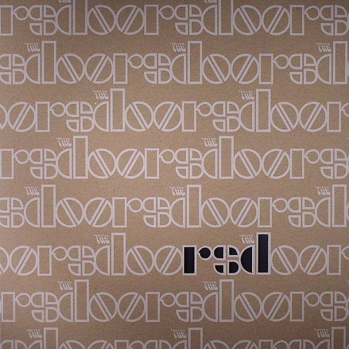
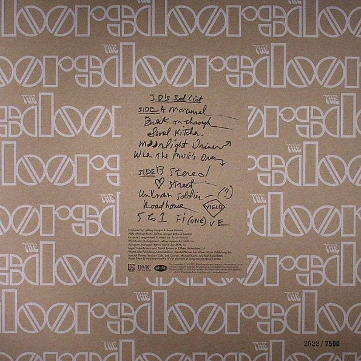

|  |
The Doors: Curated by Record Store Day Rhino / Elektra RSD Exclusive Release on LP (November 2013) The Doors are avid supporters of Record Store Day with a wide array of unique releases throughout the years, hence the title of this compilation and the track list hand-picked by independent record store owners, further selected and mastered by Bruce Botnick. Botnick, the band's original engineer, cleverly decided to use rare mono mixes as well as a couple of carefully chosen live tracks showcasing some legendary Doors shows. The high quality 180-gram vinyl comes in a sober yet beautiful cut-out sleeve in two variations, each feature a handwritten track list by one of the surviving band members; John Densmore and Robby Krieger. Limited to 7500 individually numbered copies only, THE DOORS - CURATED BY RECORD STORE DAY is a collector's item of the finest kind. Looks great framed on the wall! - Break On Through (mono) - Soul Kitchen (mono) - Moonlight Drive (mono) - When the Music's Over (mono) - Love Street (mono) - The Unknown Soldier (live at the Hollywood Bowl in Los Angeles, 1968) - Roadhouse Blues (live at the Felt Forum in New York, January 17, 1970 - 1st Show) - Five To One (live at the Arena in Boston, 1970 - 2nd Show) � Kevin Chiotis for the Doors Quarterly Magazine Online - Dec. 2014 |
|||
|  | ||||

|

|